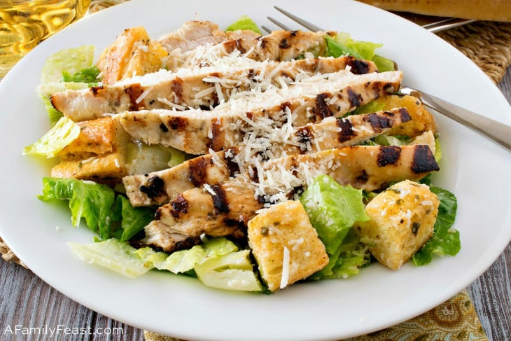

American Caesar Salad

What is the American Caesar Salad?
An American Caesar salad is a variation of the classic Caesar salad that is typically made with shredded romaine
lettuce, croutons, Parmesan cheese, and a creamy dressing made with lemon juice, olive oil, egg, Worcestershire
sauce, anchovies, garlic, Dijon mustard, and black pepper.
Ingredients
For the Caesar Dressing:
-
2 cloves of garlic, peeled
-
6 anchovy fillets
-
2 egg yolks
-
1 tablespoon Dijon mustard
-
2 tablespoons lemon juice
-
1/2 cup extra virgin olive oil
-
Salt and pepper to taste
For the Salad:
-
2 heads romaine lettuce, washed and dried
-
1 cup croutons
-
1/2 cup Parmesan cheese, freshly grated
-
Lemon wedges, for serving (optional)
Steps to cook
-
Prepare the Dressing: Start by mincing the garlic and anchovy fillets together until they form a paste. You can use a food processor for this step if you have one.
-
Transfer the garlic-anchovy paste to a bowl. Add the egg yolks, Dijon mustard, and lemon juice. Whisk together until fully combined.
-
Slowly drizzle the olive oil into the bowl while continuously whisking. This will help to emulsify the dressing and give it a thick, creamy consistency. Season with salt and pepper to taste.
-
Prepare the Salad: Tear the romaine lettuce into bite-sized pieces and place in a large salad bowl.
-
Pour the dressing over the lettuce. Toss the salad until the lettuce is evenly coated with the dressing.
-
Add the croutons and grated Parmesan cheese to the salad. Toss again until everything is well mixed.
-
Serve the Caesar Salad immediately, with additional Parmesan cheese and lemon wedges on the side if desired.